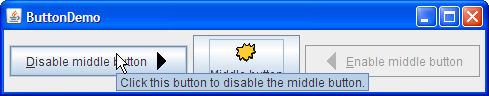

Crear una tool tip para cualquier objeto JComponent es fácil. Use el método
setToolTipText para configurar una tool tip para el componente. Por ejemplo, para agregar tool
tips a los tres botones, agregue sólo tres líneas de código:
b1.setToolTipText("Pulse este botón para dehabilitar el botón central.");
b2.setToolTipText("Este botón central no reacciona cuando hace clic sobre él.");
b3.setToolTipText("Pulse este botón para habilitar el botón central.");
Cuando el usuario del programa se para con el cursor sobre cualquier de los botones del programa, la tool tip
para el botón aparece. Puede ver esto ejecutando el ejemplo ButtonDemo, el cual está explicado en
Cómo Usar Botones, Casillas de Verificación y Botones de Radio. Aquí tiene una foto
de la tool tip que aparece cuando el cursor se para sobre el botón izquierdo en el ejemplo
ButtonDemo.

Para componentes tales como los paneles tabulados que tienen partes múltiples, a menudo tiene sentido variar el
texto de la tool tip para reflejar la parte del componente bajo el cursor. Por ejemplo, un panel tabulado
podría usar esta característica para explicar qué ocurrirá cuando pulse la pestaña bajo el cursor. Cuando
implementa un panel de pestañas, puede especificar el texto de la tool tip específica de la pestaña en un
argumento pasado al método addTab o setToolTipTextAt.
Incluso en componentes que no tienen una IPA para establecer textos de tool tip específicos de una parte, puede
generalmente hacer el trabajo usted mismo. Si el componente soporta renderizadores, entonces puede establecer
el texto de la tool tip en un renderizador personalizado. Las secciones tabla y
árbol suministran ejemplos de texto de tool tip determinado por un renderizador
personalizado. Una alternativa que funciona para todos los JComponents es crear una subclase del
componente y sobreescribir el método getToolTipText(MouseEvent).
La mayoría de la IPA que necesita para configurar tool tips pertenece a la clase JComponent, y
así se hereda por la mayoría de los componentes de Swing. Más IPAs de tool tip se encuentra en clases
individuales tales cmo JTabbedPane. En general, estas IPAs son suficientes para especificar y
mostrar tool tips; no necesita habitualmente tratar directamente con las clases de implementación
JToolTip y
ToolTipManager
.
La tabla siguiente lista la IPA de tool tip en la clase JComponent. Para más información sobre el
soporte de tool tips en componentes individuales, vea la sección cómo-hacer del componente en cuestión.
| Método | Propósito |
|---|---|
| setToolTipText(String) | Si la cadena especificada no es nula, entonces a continuación, este método registra el componente como una tool tip y, cuando se muestra, le da a tool tip el texto especificado. Si el argumento es nulo, entonces este método deshabilita la tool tip para este componente. |
| String getToolTipText() |
Devuelve la cadena que fue especificada previamente con setToolTipText.
|
| String getToolTipText(MouseEvent) |
Por defecto, devuelve el mismo valor devuelto por getToolTipText(). Componentes
Multi-parte talers como JTabbedPane,
JTable, y JTree
sobreescriben éste método para devolver una cadena asociada con la ubicación del evento de ratón. Por
ejemplo, cada pestaña en un panel tabulado puede tener un texto de tool tip diferente.
|
| Point getToolTipLocation(MouseEvent) | Devuelve la ubicación (en el sistema de coordenadas del comoponete que recibe) dónde aparece la esquina superior izquierda de la tool tip del componete. El argumento es el evento que cauós que la tool tip se mostrara. El valor devuelto por defecto es null, lo que le indica al sistema de Swing que elija una ubicación. |
Esta tabla lista algunos ejemplos que usan tool tips y apunta a dónde esos ejemplos están descritos.
| Ejemplo | Dónde Se Describe | Notas |
|---|---|---|
ButtonDemo |
Esta sección y Cómo Usar Botones, Casillas de Verificación y Botones de Radio | Usa una tool tip para suministrar instrucciones para un botón. |
IconDemo |
Cómo Usar Iconos | Usa una tool tip en una etiqueta para ofrecer la información del nombre y tamaño de una imagen. |
TabbedPaneDemo
|
Cómo Usar Paneles Tabulados |
Utiliza el texto de sugerencia de herramienta específico de la pestaña especificado en un argumento
para el método addTab.
|
TableRenderDemo
|
Especificación de Tool Tips Para Celdas | Agrega tool tips a una tabla usando un renderizador. |
TableToolTipsDemo
|
Especificación de Tool Tips Para Celdas, Especificación de Tool Tips para los Encabezados de Columna | Agrega tool tips a una tabla usando varias técnicas. |
TreeIconDemo2
|
Personalizar la Visualización del Árbol | Agrega tool tips a un árbol usando un renderizador personalizado. |
ActionDemo |
Cómo Usar Acciones | Agrega tool tips a botones que han sido creados usando Actions. |